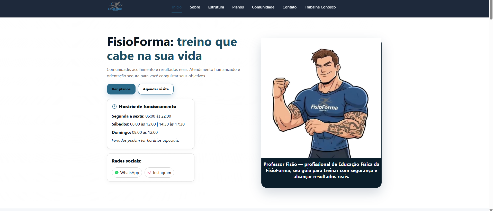
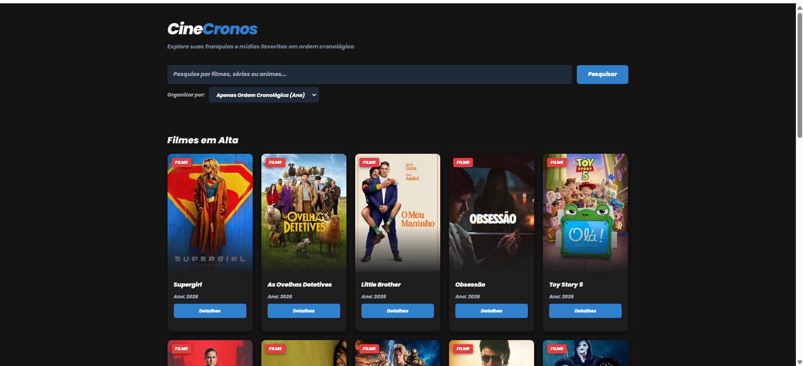
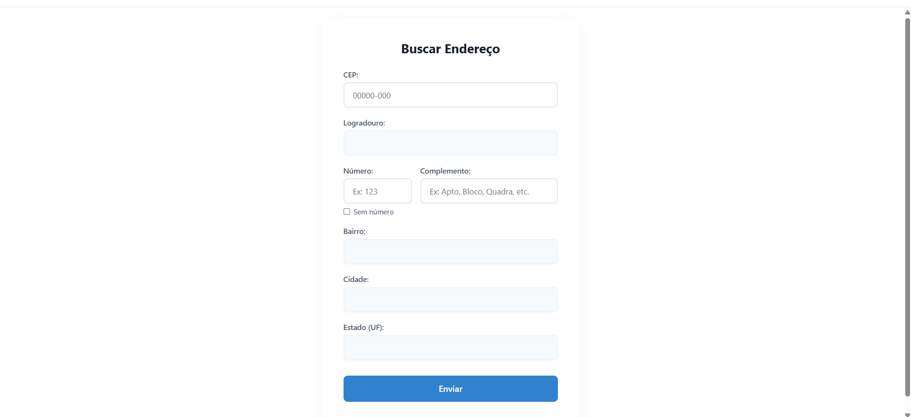

Academia Fisioforma
Projeto desenvolvido para apresentar a Academia Fisioforma na web. Durante sua criação pratiquei HTML, CSS e JavaScript, buscando construir uma interface organizada, moderna e agradável para o usuário.
Visitar Site"Transformando curiosidade em conhecimento e conhecimento em projetos."
Olá! Meu nome é Giselle e atualmente curso Análise e Desenvolvimento de Sistemas. Meu interesse por tecnologia começou há alguns anos, quando iniciei meus estudos em Ciência da Computação. Posteriormente, decidi seguir outro objetivo e ingressei no Bacharelado em Educação Física, curso que estou concluindo atualmente.
Mesmo durante esse período, a tecnologia nunca deixou de fazer parte da minha vida. Com o tempo, percebi que queria retomar esse caminho e decidi voltar à área por meio da graduação em Análise e Desenvolvimento de Sistemas.
Hoje busco desenvolver meus conhecimentos principalmente em desenvolvimento web, criando projetos para colocar em prática o que aprendo em sala de aula. Também tenho interesse por automações e sistemas embarcados, áreas que venho explorando através de estudos e projetos com ESP32 e Arduino.
A experiência na Educação Física me ensinou disciplina, organização e persistência, qualidades que considero fundamentais tanto nos estudos quanto no desenvolvimento de software. Acredito que a melhor forma de aprender é construindo projetos reais e enfrentando novos desafios.

Projeto desenvolvido para apresentar a Academia Fisioforma na web. Durante sua criação pratiquei HTML, CSS e JavaScript, buscando construir uma interface organizada, moderna e agradável para o usuário.
Visitar Site
Aplicação criada para praticar JavaScript, manipulação do DOM e organização de conteúdo. O projeto reúne informações sobre filmes em uma interface simples, dinâmica e intuitiva.
Visitar Site
Projeto desenvolvido para praticar o consumo de APIs utilizando JavaScript. Ao informar um CEP válido, os dados do endereço são preenchidos automaticamente de forma rápida e prática.
Visitar Site